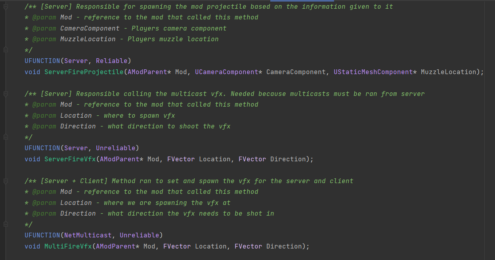
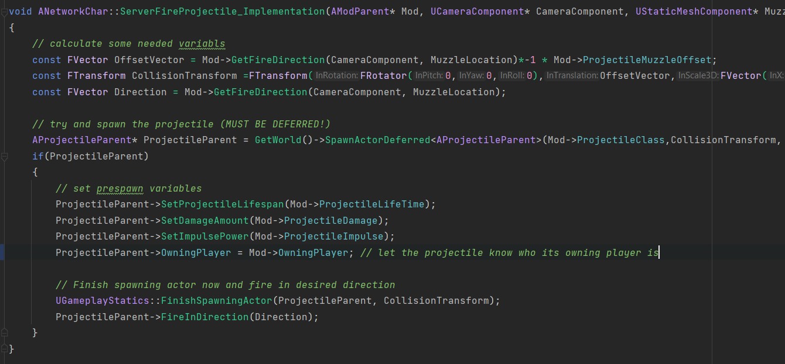
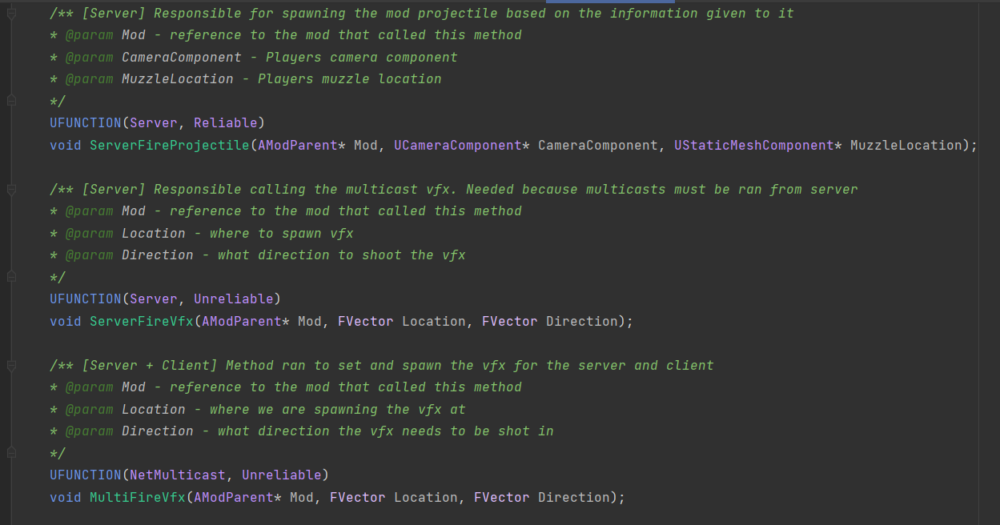
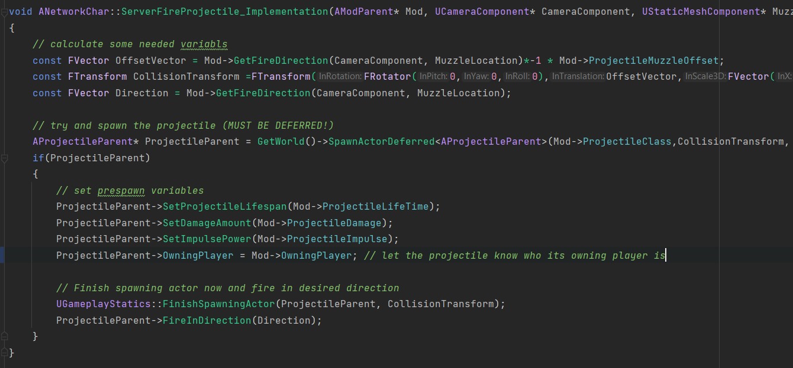
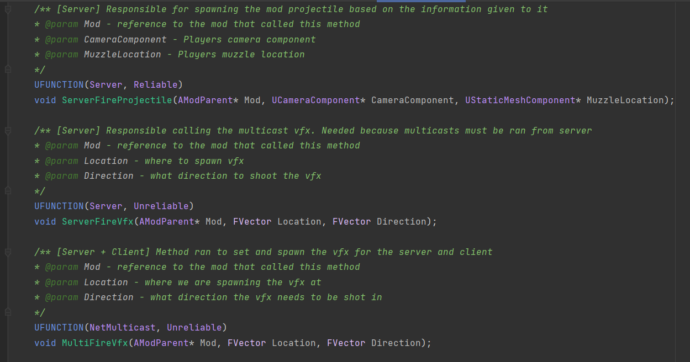
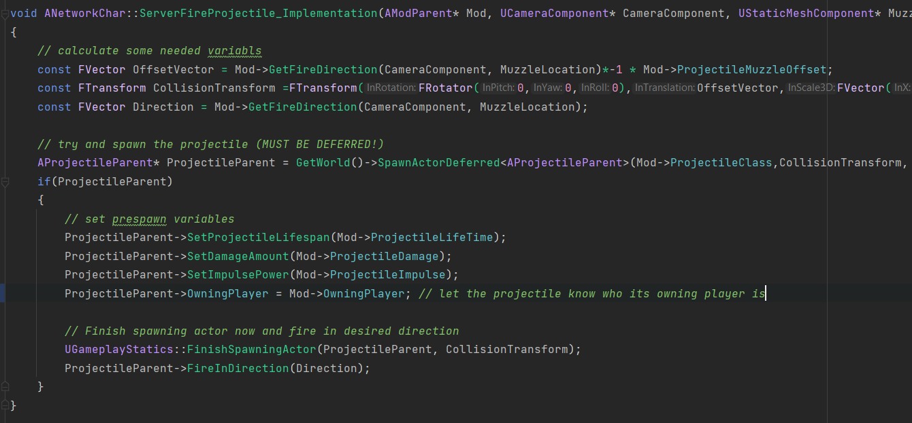

At the start of this two week streatch I came to the realization that we have been completely naive and ignorant
to what really goes on when making a networked multiplayer game. Over the course of my last 4 years in college
all of the work we've ever done with games was in singleplayer and because of that I had developed a very
singleplayer oriented mind. Little did we realize that this was going to end up being a pit fall for us.
At the start of development for Blast when deciding what roles we were going to have we decided on having one
"network programmer", as at the time we did not know any better and over the course of development none of our
seniors overseeing the project mentinoed anything about it. But us having the idea that we could do just one
network programmer was a very incorrect move. Since I came to the realization lately that you cannot have just
network programmer, but instead every programmer on the team must be a network programmer since nearly all,
if not all, lines of code need to be written with networking in mind. Because of this long running issue,
what I realized was that we had a lot of systems that were made for a singleplayer game inside a multiplayer game.
And it doesnt take a rocket scientist to realize that doesnt make any sense at all to have.
From this realization, my goal for this Dev Log was to take our core systems within our inventory/weapon system
and turn that single player code into effective and efficient networking code.
What actually got achieved
By the end of this 2 week span a great deal was achieved. First and foremost is just the sheer amout of information
and knowledge I've gain when it comes to networking in Unreal engine. By no means did I become some kind of
networking wizard within 2 weeks in Unreal, but in the past two weeks I went from little to no knowledge of how
Unreals C++ networking works to being able to take single player code and re-write it into functioning multiplayer
code. I had to re-write how the inventory handles everything to take client server architecture into consideration
as well as lay encapsulated groundwork for all of our mods to be able to utilize when spawning their vfx and
projectiles. While, on the surface, the number of lines of code that got writen over the last 2 weeks
certainly didnt break any records for myself the leaps and strides I took personally and for this project were
very large. The past 2 weeks have taught me that I really have a set of tools that allow me learn new things at a
very efficient pace.
The Results
I'll try and not get into too many tiny details here to keep the reading to to a minimum. First I'll show a small demo
below of what the end result was after the past 2 weeks of re-writing and learning:
In the above demo you can see as the server fires at the client the hits are registered correctly and without
issue. While this may seem like a small feat this is something that Blast has struggled with since its first
networking integration. In other words Blast for the first time works reliably and consistenly over those PvP
interactions. And while only our Default mod is visible being used its utlizing the encapsulated groundwork that
I wrote for all the mods to utilize so that they dont have to do any extra networking then is needed. After all,
the only things that are really NEEDED are the projectiles being spawned on the server so that they are put onto
the server and clients and the vfx being spawned from a Multicast ran from the server so that everyone is able to
see the vfx. This along with some specific variable replication is all handled within that encapsulated groundwork
of functions that the mods are easily able to access to do everything they need without any extra work being put onto
the server.
Here is an example of that encapsulated groundwork that I layed out for our mods to utilize:

The first image lays out a few of the functions declerations. Looking specifically at the "ServerSpawnProjectile"
this is what a mod is able to use when it wants to spawn a projectile. All it has to do is pass the function
a reference to itself so it knows what mod type is wanting to fire so it can get needed member variables from
within that reference. The function body is show in the image below where you can see how it uses this
reusable architecture to spawn the projectile on the server as is required.
Challenges Faced and Things Learned
I have learned a very large amount of the past 2 weeks. I have spend many many hours on the internet and forums and
discord servers. Reading the Unreal networking compendium and reasearching smaller details as well as getting
information from people with experience in the Unreal Slackers discord server. All of that combined with a sizable
time comitment and I was able to successfuly convert our single player code into functioning multiplayer code.
Though that may sound nice I certainly had my fair share of head aces and confused hand gestures. I was not in a
very good position as it was very high stress with the weight of getting our core systems fixed all by myself.
But even though it was very stressufl are far from easy I came out of this definitly ahead of the game with the
experience from the stressful time crunch of the situation as well as the knowledge gained about network programming
in Unreal C++ and by extension blueprints as well.
 In the above demo you can see as the server fires at the client the hits are registered correctly and without
issue. While this may seem like a small feat this is something that Blast has struggled with since its first
networking integration. In other words Blast for the first time works reliably and consistenly over those PvP
interactions. And while only our Default mod is visible being used its utlizing the encapsulated groundwork that
I wrote for all the mods to utilize so that they dont have to do any extra networking then is needed. After all,
the only things that are really NEEDED are the projectiles being spawned on the server so that they are put onto
the server and clients and the vfx being spawned from a Multicast ran from the server so that everyone is able to
see the vfx. This along with some specific variable replication is all handled within that encapsulated groundwork
of functions that the mods are easily able to access to do everything they need without any extra work being put onto
the server.
Here is an example of that encapsulated groundwork that I layed out for our mods to utilize:


The first image lays out a few of the functions declerations. Looking specifically at the "ServerSpawnProjectile"
this is what a mod is able to use when it wants to spawn a projectile. All it has to do is pass the function
a reference to itself so it knows what mod type is wanting to fire so it can get needed member variables from
within that reference. The function body is show in the image below where you can see how it uses this
reusable architecture to spawn the projectile on the server as is required.
In the above demo you can see as the server fires at the client the hits are registered correctly and without
issue. While this may seem like a small feat this is something that Blast has struggled with since its first
networking integration. In other words Blast for the first time works reliably and consistenly over those PvP
interactions. And while only our Default mod is visible being used its utlizing the encapsulated groundwork that
I wrote for all the mods to utilize so that they dont have to do any extra networking then is needed. After all,
the only things that are really NEEDED are the projectiles being spawned on the server so that they are put onto
the server and clients and the vfx being spawned from a Multicast ran from the server so that everyone is able to
see the vfx. This along with some specific variable replication is all handled within that encapsulated groundwork
of functions that the mods are easily able to access to do everything they need without any extra work being put onto
the server.
Here is an example of that encapsulated groundwork that I layed out for our mods to utilize:


The first image lays out a few of the functions declerations. Looking specifically at the "ServerSpawnProjectile"
this is what a mod is able to use when it wants to spawn a projectile. All it has to do is pass the function
a reference to itself so it knows what mod type is wanting to fire so it can get needed member variables from
within that reference. The function body is show in the image below where you can see how it uses this
reusable architecture to spawn the projectile on the server as is required.